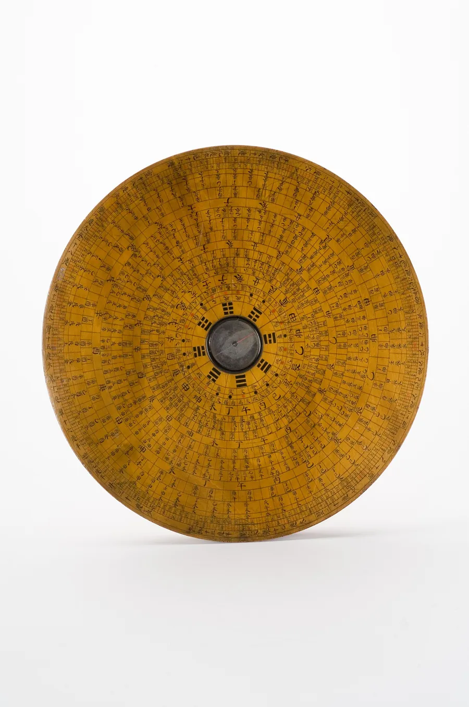
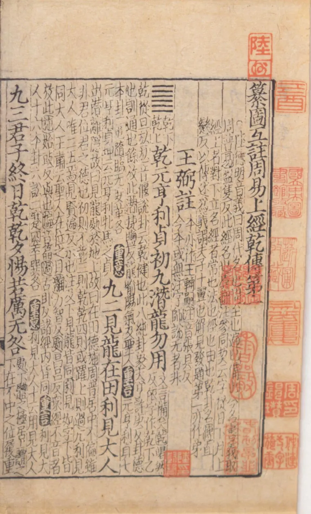
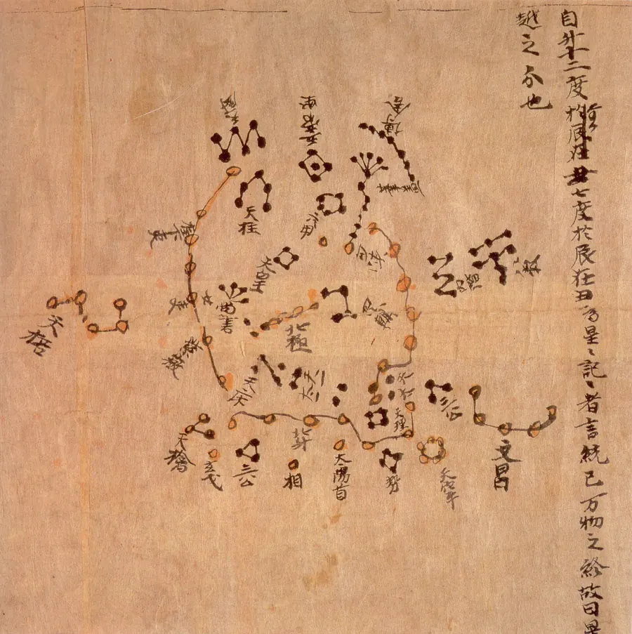

—
—
—
—
卦辞
解卦
宜
—
忌
—
推演依据与限度
十二时辰
朱砂标出的是起卦时辰
近七日
点一日，重读那天的卦
这一卦是怎么起的
卦不是随机抽的。年月日时四个数定出上下卦与动爻，再与你的四柱、当天的黄历、行运合看。同一日同一时辰，只出一卦。
-
起卦
农历年支数、月、日相加取上卦；再加时辰数取下卦；总和取六爻之地为动爻。依的是梅花易数年月日时法。
-
得卦
六爻自下而上，动爻所在之卦为用，另一卦为体。体用五行生克定大势，再看得出的变卦与互卦。
-
断卦
与四柱喜忌、黄历宜忌、当日行运合参，落到情感、事业、财运、健康、人际、学业六事，最后收成一句可用的话。



命盘
—
四柱
五行与喜忌
旺衰推算细节
大运
本命星盘
行星落座
主要相位
今日行运
依据与限度
历算、八字、黄历与西洋占星都在本机计算，算法经过天文基准与外部锚点校核：太阳黄经归零误差小于百万分之一度，月亮位置与 Meeus 例 47.a 相差 0.007°，日柱干支四个锚点全部命中。
已知限度：节气时刻与天文年历可能相差 1–12 分钟；二十八宿值日、福神方位、晚子时等存在流派差异；旺衰喜用的权重属当代教学体系，不同流派会得出不同结论。它是一个自洽的参照系，不是事实断言。
本地引擎路径：—